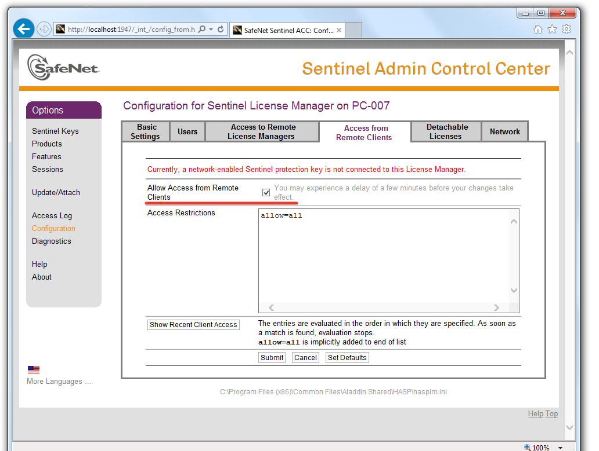
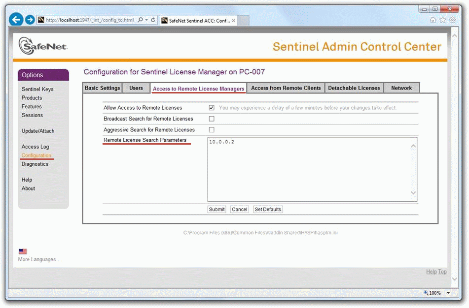
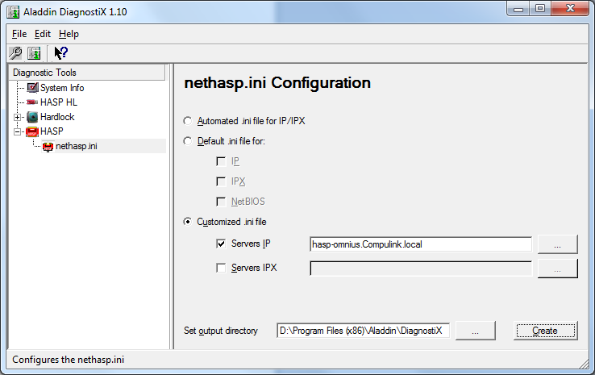
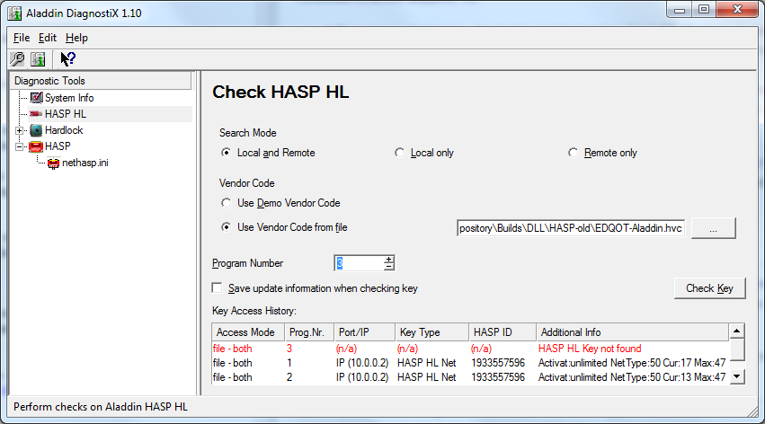
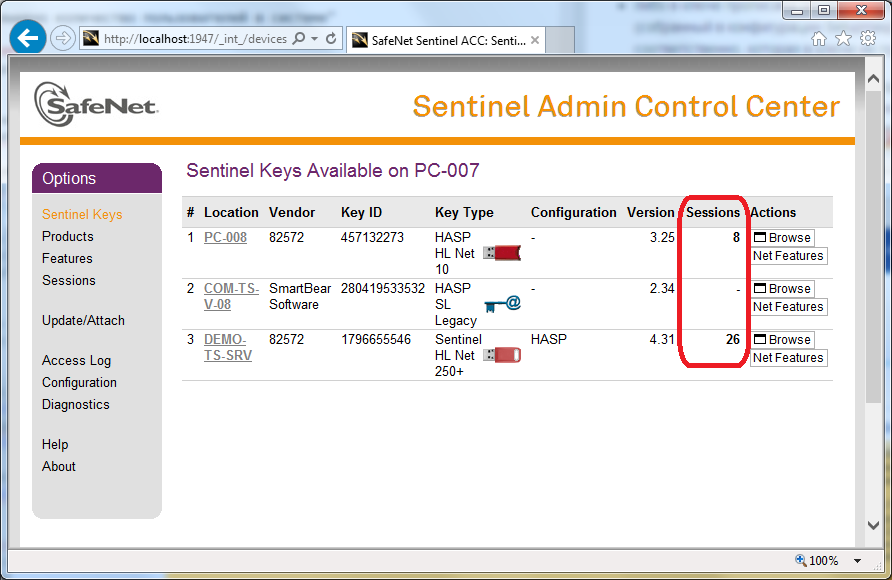
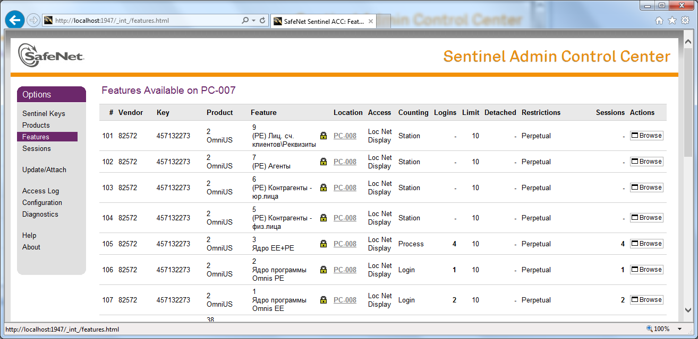

Использование HASP в АИС Omni-US
HASP (англ. Hardware Against Software Piracy) — это мультиплатформенная аппаратно-программная система защиты программ и данных от незаконного использования и несанкционированного распространения, разработанная компанией Aladdin Knowledge Systems Ltd (с 2009 года - часть SafeNet Inc, с 2014 года SafeNet - часть Gemalto).
Защита HASP включает в себя:
- электронный ключ HASP;
- специальное программное обеспечение для «привязки» к электронному ключу, защиты приложений и для шифрования данных;
- схемы и методы защиты программ и данных, обнаружения и борьбы с отладчиками, контроля целостности программного кода и данных.
Электронные ключи HASP выпускаются в различном виде:
- программный ключ HASP SL
- USB-ключ;
- LPT-ключ с возможностью «прозрачного» подключения других ключей и устройств;
- PCMCIA-карта;
- внутренняя плата стандарта PCI и ISA.
Для защиты Omni-US от несанкционированного распространения и для контроля соблюдения лицензионных соглашений используются USB-ключи HASP HL как "старых" версий Aladdin HASP HL Net (далее - Aladdin HASP), так и "новых" Sentinel HL Net (далее - Sentinel HASP).
Начиная с Windows Server 2012, поддержка ключей Aladdin HASP ограничена (доступность USB-ключа, подключенного в машину под управлением этой или более новой ОС, не гарантирована), поэтому с 2016 года IServ использует ключи Sentinel HASP.
С точки зрения конечного пользователя Aladdin HASP и Sentinel HASP отличаются драйверами и инструментами для настройки машин "HASP-сервера" и "HASP-клиентов", но не применением в повседневной работе.
Ключи Aladdin HASP и Sentinel HASP различаются способом указания кода вендора (производителя защищаемого ПО), поэтому клиентское приложение Omnis при запуске определяет, с какой моделью ключа работать, по версии библиотеки hasp_net_windows.dll, расположенной в каталоге с приложением; ключи разных поколений, выпущенные IServ, не совместимы между собой (несмотря на совместимость с т.зр. обращения к функциям HASP в целом), т.е. Omnis с новыми драйверами Sentinel не "увидит" старый ключ Aladdin HASP и наоборот.
Вопросы работы с ключами с точки зрения разработчика защищаемого ПО рассмотрены на сайте производителя:
В данном документе скриншоты могут отличаться от актуального вида изображенных инструментов без потери смысла
Функции HASP в Omni-US
Клиент Omni-US (для работы с юр.лицами OmnisEE.exe или с физ.лицами OmnisPE.exe) при запуске ищет в локальной сети HASP-ключ со "свободной" лицензией, и, если удалось её "занять", анализирует, какие разделы системы (в терминологии HASP - "Feature", например, "(PE) Контрагенты - физ.лица", "(EE) Отчеты" и т.д., см Приложение 1) лицензированы и должны быть доступны пользователю (нелицензированные скрываются в интерфейсе пользователя).
Клиентское приложение может быть скомпилировано в трёх вариантах:
- NoHASP-версия - вообще не использует функциональность HASP
- SetupHasp-версия - проверяет наличие свободных лицензий на запуск OmnisEE / OmnisPE (может работать с обоими вариантами ключей - и Aladdin, и Sentinel)
- SetupHaspExt-версия (только для Sentinel HASP) - проверяет наличие свободных лицензий на запуск любого Omni-US, без разделения на EE и PE
Настройка машины с ключом
На машине, где размещен HASP-ключ защиты, необходимо:
Aladdin HASP
- Разрешить соединения по порту
475(и UDP и TCP) - Установить драйвер (актуальная версия - на сайте Sentinel по состоянию на 11.09.2018, распространяемая с инсталлятором Omnis версия -
\\fs02\Dev_Repository\Builds\Install HASP drivers\drivers\HASPUserSetup.exe. - Установить и запустить HASP License Manager (
\\fs02\Dev_Repository\Builds\Install HASP drivers\HASP_LM_setup\lmsetup.exeлибо на сайте Sentinel) - специальное приложение Aladdin, осуществляющее обмен данными между USB-ключом и защищенным приложением (далее - HASP LM).
Sentinel HASP
- Разрешить соединения по порту
1947(и UDP и TCP) - Установить драйвер Sentinel HASP Run time Environment (актуальная версия - на сайте Sentinel по состоянию на 11.09.2018, в локальной сети -
\\\fs02\Dev_Repository\Builds\Install HASP drivers\! New\Sentinel_LDK_Run-time_setup.zip) - Запустить консоль управления Sentinel Admin Control Center, перейдя в браузере по адресу http://localhost:1947, и разрешить удаленные подключения на вкладке Access from Remote Clients:

Дополнительно
Для работы ключей Aladdin HASP по сети в любом случае необходим запуск HASP License Manager, но драйвер может быть использован и современный (Sentinel HASP Run time Environment), т.к. он успешно обеспечивает работу USB-ключа как устройства HASP.
Таким образом, на одной машине с одним драйвером могут одновременно работать оба вида ключей.
Настройка пользовательской машины
Aladdin HASP
- Разрешить соединения по порту
475(и UDP и TCP) - Убедиться, что рядом с исполняемым файлом OmnisEE.exe / OmnisPE.exe расположена клиентская библиотека HASP
hasp_net_windows.dll(HASP HL Assembly for Microsoft.Net) производителя Aladdin Knowledge Systems Ltd. (в локальной сети -\\fs02\Dev_Repository\Builds\DLL\hasp_net_windows.dll, а также библиотекаhaspenv.dll(HASP HL Envelope Runtime for Microsoft.Net) того же производителя (в локальной сети -\\fs02\Dev_Repository\Builds\DLL\haspenv.dll) - Настроить файл
nethasp.ini
Настройка nethasp.ini
В файле конфигурации клиента Aladdin HASP настраивается процесс поиска клиентом экземпляра HASP License Manager.
Клиентское приложение при старте ищет файл конфигурации в следующем порядке каталогов:
- директория, где находится исполняемый файл
- текущая директория
- системная директория Windows
- директория Windows
Если файл конфигурации не найден, используется поиск HASP LM широковещательными запросами.
Для работы клиента Omni-US минимально достаточен следующий набор настроек в файле конфигурации:
[NH_COMMON]
NH_TCPIP = Enabled
NH_IPX = Disabled
[NH_TCPIP]
NH_SERVER_ADDR = 192.168.17.100
NH_USE_BROADCAST = Disabled
где
[NH_COMMON]- раздел общих настроекNH_TCPIP = Enabled- включение протокола TCP/IPNH_IPX = Disabled- отключение проткола IPX[NH_TCPIP]- раздел настроек для протокола TCP/IPNH_SERVER_ADDR = 192.168.17.100- адрес машины с HASP LM (может быть указан как IP-адрес, так и имя машины)NH_USE_BROADCAST = Disabled- отключение широковещательных запросов поиска HASP LM
Подробные сведения о конфигурационном файле приведены в Приложении 2.
Sentinel HASP
- Разрешить соединения по порту
1947(и UDP и TCP) - Убедиться, что рядом с исполняемым файлом OmnisEE.exe / OmnisPE.exe расположена клиентская библиотека HASP
hasp_net_windows.dll(Sentinel LDK Assembly for Microsoft.Net) производителя SafeNet, Inc., а также библиотеки, привязанные к поставщику ПО IServ -apidsp_windows.dll,hasp_windows_82572.dll,haspvlib_82572.dll(в локальной сети -\\fs02\Dev_Repository\Builds\DLL\HASP-new\new-hasp-dlls.zip)
Если в локальной сети запрещены широковещательные запросы и/или машина с ключом находится в другой подсети, чем машина пользователя, необходимо
- установить драйвер Sentinel HASP Run time Environment (актуальная версия - на сайте Sentinel, в локальной сети -
\\\fs02\Dev_Repository\Builds\Install HASP drivers\! New\Sentinel_LDK_Run-time_setup.zip] - запустить на пользовательской машине консоль управления Sentinel Admin Control Center перейдя в браузере по адресу http://localhost:1947
- Указать адрес "HASP-сервера" на вкладке Access to Remote License Managers в поле
Remote License Search Parameters:
, отключить широковещательные запросы (снять флаг "Broadcast Search for Remote Licenses"), если broadcast пакеты не обрабатываются; разрешить поиск ключей по сети (включить флаг "Allow Access to Remote Licenses"), если он по какой-либо причине ещё не разрешен.
Запись USB-ключа HASP
Запись лицензируемых параметров на USB-ключ осуществляется IServ либо непосредственно на ключ при наличии физического доступа к нему, либо в специальный файл *.V2C, который заказчик Omni-US самостоятельно применяет к ключу.
Для записи помимо специального ПО необходим "мастер-ключ" (содержит уникальные коды и идентификаторы, которые присваиваются IServ как вендору - производителю ПО - компанией SafeNet; записывается поставщиком ООО "АМ Софт"):
- белый с надписью "MASTER HASP HL" для Aladdin HASP
- синий с надписью "Sentinel LDK Master" и наклейкой "Master 4.27 EDQOT 04.16" на обратной стороне для Sentinel HASP
Коды IServ как вендора (подробнее понятие раскрывается в FAQ на сайте Sentinel):
82572EDQOT
Также от заказчика ключа необходимы сведения о лицензионных ограничениях (если есть): доступные функции Omni-US (см список в Приложении 1) и допустимое количество одновременно запущенных копий приложения.
Aladdin HASP
Для записи ключа Aladdin HASP нужны:
- Белый мастер-ключ
- Утилита Factory из состава Sentinel HASP SDK
Sentinel HASP
Для записи ключа Sentinel HASP нужны:
- Синий мастер-ключ
- Sentinel EMS (Entitlement Management System) из состава Sentinel LDK SDK
- Руководство по использованию Sentinel EMS
Известные экземпляры ключей
В настоящее время в локальной сети IServ доступны следующие ключи:
hasp-omnius.compulink.local- Aladdin HASP, серийный номер1933557596, 50 лицензий OmnisEE, 50 лицензий OmnisPEpc-008.compulink.local- Sentinel HASP, серийный номер457132273, 10 лицензий Omnis (для OmnisEE.exe/OmnisPE.exe, собранных в конфигурации SetupHaspExt), 10 лицензий OmnisEE, 10 лицензий OmnisPEhasp-omnius.compulink.local- Sentinel HASP, серийный номер724415323, безлимитные лицензии Omnis (для OmnisEE.exe/OmnisPE.exe, собранных в конфигурации SetupHaspExt), OmnisEE, OmnisPE
Решение проблем
С точки зрения пользователя проблема с HASP выражается в сообщении об ошибке при запуске клиентского приложения Omni-US, основные рассмотрены в данном документе:
- "Запрошенная функция недоступна"
- "Ключ HASP HL недоступен или превышено количество пользователей в системе"
Запрошенная функция недоступна
Сообщение "Запрошенная функция недоступна" отображается в случаях, когда HASP-ключ Omni-US доступен на пользовательской машине, но:
- либо в ключе прописаны лицензии на запуск ядра OmnisEE (Feature 1) и/или ядра OmnisPE (Feature 2), а клиент (собранный в конфигурации SetupHaspExt) запрашивает лицензию на запуск ядра EE+PE (Feature 3), которая в ключе не прописана
- либо в ключе прописана лицензия на запуск ядра EE+PE (Feature 3), а клиент OmnisEE.exe или OmnisPE.exe (собранный в конфигурации SetupHasp) запрашивает лицензию на запуск ядра OmnisEE или OmnisPE соответственно, которая в ключе не прописана
Вопрос решается настройкой доступа к подходящему ключу HASP, если он есть, либо записью правильного ключа HASP, либо сборкой клиентского приложения в правильной конфигурации (SetupHasp или SetupHaspExt) в зависимости от действующего с потребителем лицензионного договора.
Ключ HASP HL недоступен
Сообщение "Ключ HASP HL недоступен или превышено количество пользователей в системе" отображается в случае, когда ключ недоступен, либо доступен, но количество пользователей, уже "занявших" лицензию Omnis, действительно достигло лицензированного предела.
Aladdin HASP
В случае с Aladdin HASP доступность ключа и количество активных подключений можно увидеть с помощью утилиты Aladdin DiagnostiX (http://safenet-sentinel.ru/files/diagnostix_installer.zip, в локальной сети \\fs02\Dev_Repository\Builds\DLL\HASP-old\DiagnostiX_Installer.zip).
При запуске Aladdin DiagnostiX необходимо указать адрес машины с ключом:

файл с информацией о вендоре (производителе ПО) IServ (в локальной сети - \\fs02\Dev_Repository\Builds\DLL\HASP-old\EDQOT-Aladdin.hvc) и номер (Program Number) запрашиваемой функции (Feature). Если лицензия с заданными параметрами доступна, отобразится информация об общем количестве доступных подключений и о текущем использованном количестве:

Sentinel HASP
В случае с Sentinel HASP количество активных подключений отображается в консоли управления Sentinel Admin Control Center (http://localhost:1947) на вкладке Sentinel Keys:

Для просмотра доступных на данной машине функций (Feature) Omni-US необходимо перейти на вкладку Features:

На приведенном скриншоте видны функции №№1, 2, 3, прописанные на USB-ключе, размещенном на машине PC-008, причем:
- из 10 лицензий Ядра EE+PE (Feature 3) использовано 4 (т.е. запущено 4 экземпляра клиентского приложения OmnisEE/OmnisPE, собранного в конфигурации SetupHaspExt)
- из 10 лицензий ядра Omnis EE (Feature 1) использовано 2 (т.е. запущено 2 экземпляра приложения OmnisEE.exe, собранного в конфигурации SetupHasp)
- из 10 лицензий ядра Omnis PE (Feature 2) использована 1 (т.е. запущен 1 экземпляр приложения OmnisPE.exe, собранного в конфигурации SetupHasp)
Решение проблемы недоступности ключа
- Проверить, что на машине, где физически размещён ключ, установлены драйвера HASP соответствующей версии
- Убедиться, что HASP-ключ доступен локально на машине, где он размещён (с помощью Aladdin DiagnostiX либо Sentinel Admin Control Center)
- Разрешить соединения по UDP и TCP портам 475 (Aladdin HASP) или 1947 (Sentinel HASP) и на машине с ключом, и на машине пользователя
- В случае с Aladdin HASP проверить, что на машине с ключом запущен HASP License Manager (как служба либо как отдельное приложение), и настройки используемых протоколов совпадают с клиентскими
- В случае с Sentinel HASP проверить, что на машине с ключом разрешены удаленные обращения (вкладка Access from Remote Clients) к ключу
- Убедиться, что версия клиентской библиотеки
hasp_net_windows.dll, расположенной в каталоге с запускаемым клиентским приложением OmnisEE.exe/OmnisPE.exe, совпадает с используемой версией ключа (\\fs02\Dev_Repository\Builds\DLL\hasp_net_windows.dllи\\fs02\Dev_Repository\Builds\DLL\haspenv.dllдля Aladdin HASP,\\fs02\Dev_Repository\Builds\DLL\HASP-new\new-hasp-dlls.zipдля Sentinel HASP) - В случае с Aladdin HASP проверить настройки в файле конфигурации
nethasp.iniв каталоге с запускаемым клиентским приложением OmnisEE.exe/OmnisPE.exe (актуальный файл для локальной сети IServ -\\fs02\Dev_Repository\Builds\Install Omnis Server\nethasp.ini) - В случае с Sentinel HASP проверить в Sentinel Admin Control Center, что адрес машины с ключом указан на вкладке Access to Remote License Managers в поле
Remote License Search Parametersи поиск ключей по сети включен (флаг "Allow Access to Remote Licenses")
Приложение 1. Лицензируемые функции Omni-US
При запуске клиентское приложение в зависимости от конфигурации сборки (SetupHasp или SetupHaspExt) запрашивает лицензию на одну из трёх функций (в скобках - номер Feature):
- Ядро программы Omnis EE (1)
- Ядро программы Omnis PE (2)
- Ядро EE+PE (3)
Затем главное меню клиентского приложения может быть ограничено в зависимости от наличия доступных лицензий на следующие разделы (в скобках - номер Feature):
- (PE) Контрагенты физ.лица (5)
- (PE) Контрагенты юр.лица (6)
- (PE) Агенты (7)
- (PE) Лиц. сч. клиентов\Реквизиты (9)
- (PE) Лиц. сч. клиентов\Услуги (10)
- (PE) Лиц. сч. клиентов\Персональный учет (11)
- (PE) Лиц. сч. клиентов\Счета (12)
- (PE) Лиц. сч. клиентов\Оплаты (13)
- (PE) Лиц. сч. поставщиков\Реквизиты (17)
- (PE) Лиц. сч. поставщиков\Технический учет (18)
- (PE) Лиц. сч. поставщиков\Услуги (19)
- (PE) Лиц. сч. поставщиков\Счета (20)
- (PE) Лиц. сч. поставщиков\Оплаты (21)
- (PE) Лиц. сч. поставщиков\Доп.\Документы (22)
- (PE) Лиц. сч. поставщиков\Доп.\Задолженности (23)
- (PE) Питающая схема (24)
- (PE) Коммунальные объекты (25)
- (PE) Установка приборов учета (26)
- (PE) События персонального учета (27)
- (PE) Квартирный фонд (28)
- (PE) Реестры начислений (29)
- (PE) Начисления (30)
- (PE) Реестры вх.платежей (31)
- (PE) Невыясненные суммы (32)
- (PE) Вх. платежи (33)
- (PE) Начисления поставщиков (34)
- (PE) Исх. платежи (35)
- (PE) Состояние расчетов с абонентами (36)
- (PE) Дебиторы-Кредиторы (37)
- (PE) Обороты по номенклатурам (38)
- (PE) Документы на отключение услуг (39)
- (PE) Журнал задолженности (40)
- (PE) Журнал проводок (41)
- (PE) Акты съема показаний (42)
- (PE) Актовые суммы (43)
- (PE) Входящие документы (Документооборот) (44)
- (PE) Исходящие документы (Документооборот) (45)
- (PE) Журнал операций (46)
- (PE) Выполнить расчет (47)
- (PE) Разнести документы (48)
- (PE) Удалить разноски (49)
- (PE) Подвести итог за период (50)
- (PE) Проведение документов (51)
- (PE) Фактурирование платежей (52)
- (PE) Расчет с поставщиками (53)
- (PE) Отчеты (54)
- (PE) Справочники (55)
- (PE) Настройка сбытовой организации (56)
- (PE) Администрирование (57)
- (PE) Настройка отчетов (58)
- (PE) Настройка невыясненных сумм (59)
- (PE) Финансы (60)
- (EE) Контрагенты физ.лица (62)
- (EE) Контрагенты юр.лица (63)
- (EE) Агенты (64)
- (EE) Лиц. сч. клиентов\Реквизиты (65)
- (EE) Лиц. сч. клиентов\Услуги (66)
- (EE) Лиц. сч. клиентов\Технический учет (67)
- (EE) Лиц. сч. клиентов\Профили нагрузок (68)
- (EE) Лиц. сч. клиентов\Доп.\Документы (69)
- (EE) Лиц. сч. клиентов\Доп.\Не рассчит. периоды (70)
- (EE) Лиц. сч. клиентов\Доп.\Задолженности (71)
- (EE) Лиц. сч. поставщиков\Реквизиты (72)
- (EE) Лиц. сч. поставщиков\Технический учет (73)
- (EE) Лиц. сч. поставщиков\Услуги (74)
- (EE) Лиц. сч. поставщиков\Счета (75)
- (EE) Лиц. сч. поставщиков\Оплаты (76)
- (EE) Лиц. сч. поставщиков\Доп.\Документы (77)
- (EE) Лиц. сч. поставщиков\Доп.\Задолженности (78)
- (EE) Питающая схема (79)
- (EE) Коммунальные объекты (80)
- (EE) Установка приборов учета (81)
- (EE) Реестры начислений (82)
- (EE) Начисления (83)
- (EE) Реестры вх.платежей (84)
- (EE) Невыясненные суммы (85)
- (EE) Вх. платежи (86)
- (EE) Состояние расчетов с абонентами (87)
- (EE) Дебиторы-Кредиторы (88)
- (EE) Журнал задолженности (89)
- (EE) Журнал проводок (90)
- (EE) Акты съема показаний (91)
- (EE) Профили нагрузок (92)
- (EE) Актовые суммы (93)
- (EE) Входящие документы (Документооборот) (94)
- (EE) Исходящие документы (Документооборот) (95)
- (EE) Журнал операций (96)
- (EE) Выполнить расчет (97)
- (EE) Разнести документы (98)
- (EE) Удалить разноски (99)
- (EE) Подвести итог за период (100)
- (EE) Фактурирование платежей (101)
- (EE) Отчеты (102)
- (EE) Справочники (103)
- (EE) Настройка сбытовой организации (104)
- (EE) Адмистрирование (105)
- (EE) Настройка отчетов (106)
- (EE) Настройка невыясненных сумм (107)
- (EE) Расчетные ведомости (108)
- (EE) Новый платеж (109)
- (EE) Ограничения энергоснабжения (110)
- (EE) Выполнить расчет (балансовый метод) (111)
- (EE) Финансы (112)
Приложение 2. Сведения о файле конфигурации nethasp.ini
Конфигурационный файл nethasp.ini состоит из четырех секций, каждая из которых является необязательной:
[NH_COMMON]для общих настроек[NH_IPX]для протокола IPX[NH_NETBIOS]для протокола NetBios[NH_TCPIP]для протокола TCP/IP
Секция [NH_COMMON] содержит глобальные настройки для всех секций конфигурационного файла. Каждая из остальных секций содержит настройки, регулирующие операции конкретного протокола.
В каждой секции могут быть заданы общие ключевые слова и/или ключевые слова, применяемые только в данной
секции. Если общее ключевое слово задано в секции какого-либо из протоколов, для данного протокола данная настройка будет иметь приоритет по сравнению со значением в секции [NH_COMMON].
Символ «;» в начале строки является признаком закомментированной строки, такая строка не обрабатывается.
Общие ключевые слова
nh_session- максимальный период времени, в течение которого защищенное приложение будет пытаться установить соединение с HASP LM. Возможное значение: <число>. По умолчанию – 2 секунды.nh_send_rcv- максимальный период времени для HASP LM на получение и передачу пакетов. Возможное значение: <число>. По умолчанию – 1 секунда.
Ключевые слова только для секции [NH_COMMON]
nh_ipx- использовать протокол IPX? Возможные значения:enabled,disabled.nh_netbios- использовать протокол NETBIOS? Возможные значения:enabled,disabled.nh_tcpip- использовать протокол TCP/IP? Возможные значения:enabled,disabled.
Ключевые слова только для секции [NH_IPX]
nh_use_bindery- использовать IPX с bindery (содержит имена и пароли пользователей для авторизации при регистрации на даном компьютере). Данный ключ заменяет ранее использовавшийся ключNH_USE_SAP. Возможные значения:enabled,disabled. По умолчанию –disabled.nh_use_broadcast- ипользовать механизм широковещания IPX. Возможные значения:enabled,disabled. По умолчанию –enabled.nh_bc_socket_num- номер сокета для механизма широковещания. Возможное значение: <шестнадцатиричное число>. По умолчанию –7483H.nh_use_int- возможные значения:2F_NEW,7A_OLD. По умолчанию –2F_NEW, означает, что протокол IPX будет использовать ТОЛЬКО прерывание 2Fh.7F_OLDозначает, что протокол IPX будет использовать ТОЛЬКО прерывание 7Ah.nh_server_name- имя экземпляра HASP LM. Максимальное количество имен – 6, максимальная длина имени – 7 символов (не является регистрозависимым).nh_search_method- как защищенное приложение будет общаться с HASP LM: в локальной сети или в интернет. Возможные значения:localnet,internet. По умолчанию -internet.nh_datfile_path- расположение адресного файла HASP LM
Ключевые слова только для секции [NH_NETBIOS]
nh_nbname- имя экземпляра HASP LM. Максимальное количество имен – одно, максимальное количество символов – 8 (не является регистрозависимым).nh_uselananum- номер канала коммуникации.
Ключевые слова только для секции [NH_TCPIP]
nh_server_addr- IP-адреса всех необходимых менеджеров лицензий HASP. Количество адресов не ограничено, возможно перечисление в несколько строк. Формат задания IP-адреса:192.114.176.65илиftp.aladdin.co.ilnh_server_name- имя экземпляра HASP LM. Максимальное количество имен – 6, максимальная длина имени – 7 символов (не является регистрозависимым).nh_port_number- номер порта для протокола TCP/IP (опционально). По умолчанию –475.nh_tcpip_method- метод отправки пакетов – TCP или UDP. Возможные значения:TCP,UDP. По умолчанию –UDP.nh_use_broadcast- использовать широковещательный механизм UDP. Возможное значение:enabled,disabled. По умолчанию –enabled.